A HANDMADE WORLD BENEATH THE WAVES
潜入一片
柔软的海。
把绒线变成海草，把想象织成珊瑚。
游鱼、贝壳与小蟹，在光影里自在相遇。
轻点海水喂一口，收下一颗小爱心。
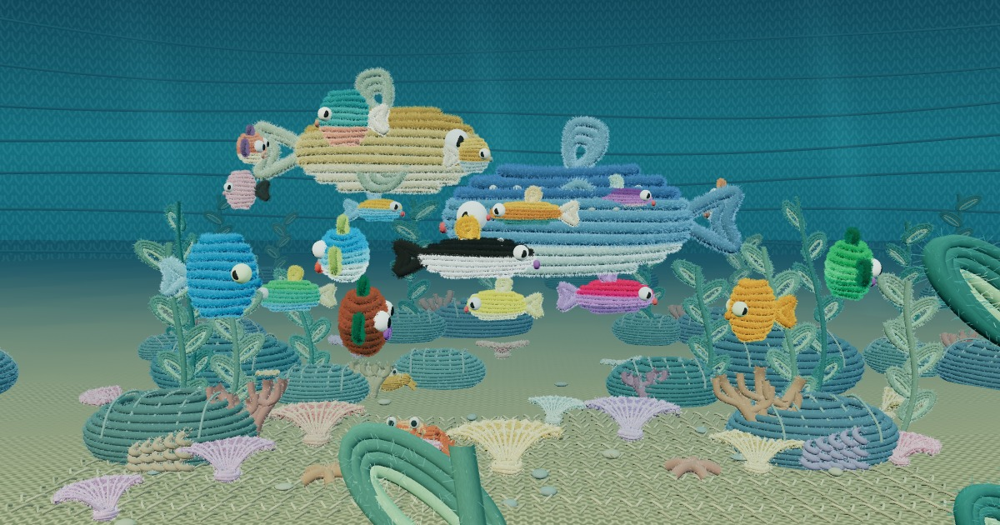
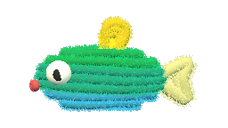
长身小鱼
柠檬潜水员
绿背、蓝肚皮，顶着一枚柠檬黄的背鳍。
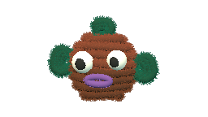
圆脸小鱼
可可泡泡
方圆的棕色脸，紫色嘟嘴，还有不一样高的眼睛。
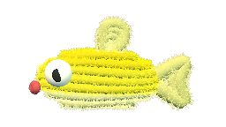
长身小鱼
柠檬小舟
亮黄色的长身体，奶油色鱼腹与一对柔软的叉尾。
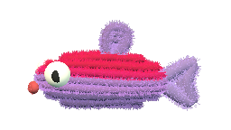
长身小鱼
莓果汽水
玫红叠着淡紫，长长的身体接一条卷曲小尾巴。
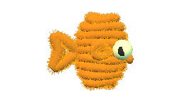
扇形小鱼
橘子扇
像一枚蓬松的橘色贝壳，睁着薄荷绿的大眼睛。
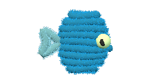
扇形小鱼
蓝色蝴蝶
宽宽的扇形身体和浅蓝尾鳍，像慢慢展开的翅膀。
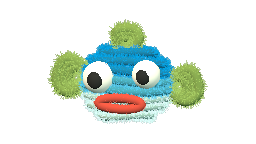
圆脸小鱼
蓝莓嘟嘟
海蓝色圆脑袋，配一张忍不住想笑的珊瑚红大嘴。
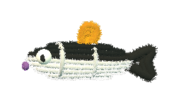
长身小鱼
黑白小鲸
黑背、白肚皮，两道白色绒条跨过身体，橙色背鳍轻轻翘起。
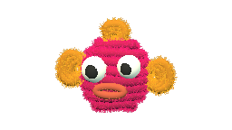
圆脸小鱼
玫瑰团子
玫红色线圈叠成小团子，橙色短鳍伸向四周。
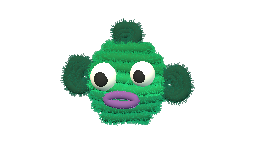
圆脸小鱼
海草精灵
绿色圆脸，深绿耳朵一样的鱼鳍，一张小小的紫色嘴。
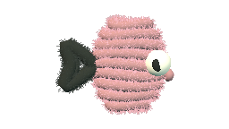
扇形小鱼
樱花小扇
轻轻压扁的粉色鱼身，黑色尾鳍让温柔多一点俏皮。
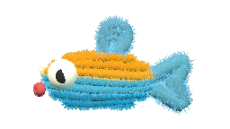
长身小鱼
橙蓝小箭
橙色与湖蓝一上一下，短短的尾巴，红红的小嘴。
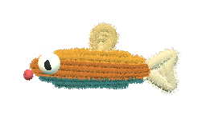
长身小鱼
琥珀小梭
细长的琥珀色鱼身，深青肚皮和奶油尾巴，轻快地穿过鱼群。
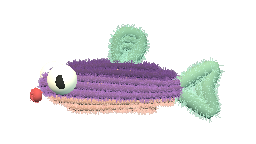
长身小鱼
葡萄小游侠
梅紫色长身体，蜜桃色腹部，薄荷绿的小鳍在水里轻轻摆动。
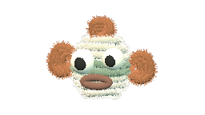
圆脸小鱼
雾银泡泡
象牙白与鼠尾草绿绕成软软的小圆球，铜橙色短鳍慢悠悠地划水。
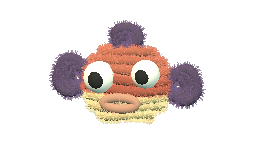
圆脸小鱼
赤陶团团
圆滚滚的赤陶红小鱼，奶油黄鱼腹，深紫色鱼鳍像两片小叶子。
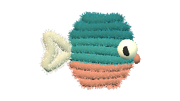
扇形小鱼
孔雀小扇
孔雀青与珊瑚橙交叠，奶白色尾鳍托着一片小小的扇形身体。
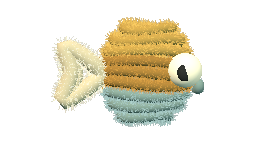
扇形小鱼
姜饼小扇
姜黄色绒圈叠着灰青色鱼腹，短短的奶白尾巴让它看起来格外俏皮。
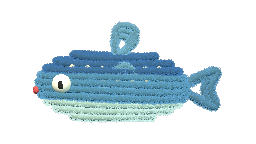
大型游鱼
斑点巡游鱼
宽厚的靛蓝色大鱼，奶白绒点缀满鱼背。它摆动大尾鳍，从小鱼身边缓缓游过。
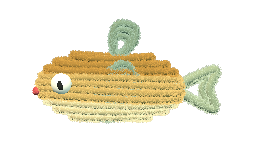
大型游鱼
金色领航鱼
金色与奶油色交织的宽厚鱼身，舒展着大鱼鳍，在鱼群外侧悠然转弯。
绒绒浅海
在珊瑚与海草之间，遇见柔软的海洋居民。